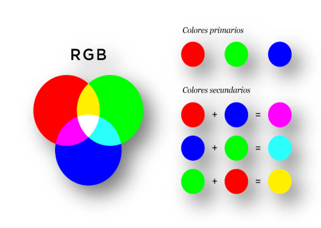
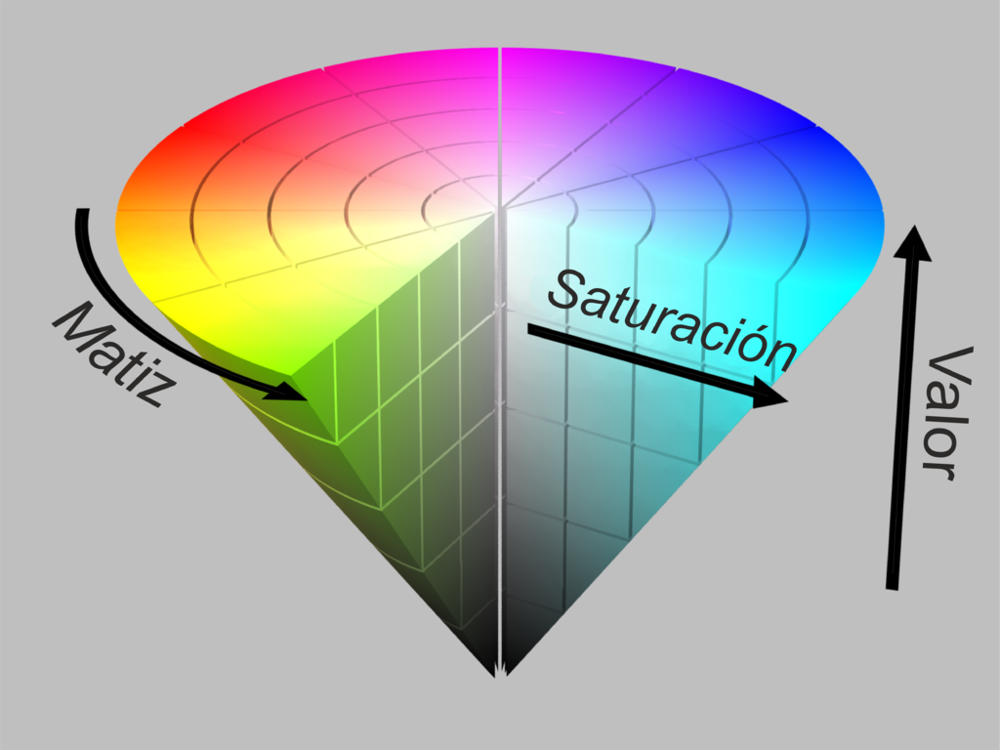
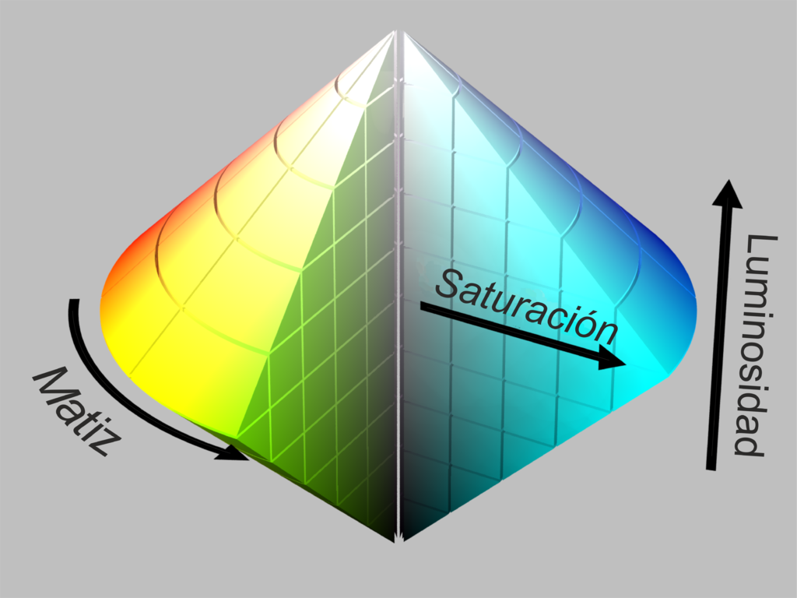

Un modelo de color consiste en un sistema numérico que identifica colores únicos. El modelo RGB (Red, Green, Blue) es muy utilizado en pantallas o tecnologías que usan la luz en general. Los colores rojo, verde y azul se combinan en distintas intensidades para producir millones de colores distintos.
Se trata de un modelo aditivo, ya que mezclar luces de los tres colores da lugar a una más blanca. En cualquier caso, el color resultante queda identificado por una tríada de números que se compone a partir de la saturación de cada uno de los colores primarios en orden rojo-verde-azul.
Cuántos colores pueden definirse mediante el modelo RGB depende del rango de valores que usemos para medir la intensidad de color. Es la “profundidad de color” y se indica en bits. La más común es de 24 bits, esto es, 8 bits por cada uno de los colores primarios. De esta forma, hay 28 valores posibles para cada uno (desde 0, su ausencia, hasta 255, su expresión más intensa) y 224 colores a definir, más del doble de los siete millones que se estima el ojo humano es capaz de distinguir.

Descripción del modelo RGB, de tipo aditivo
El color: modelo HSL
El modelo HSL (Hue, Saturation, Lightness) define el color de otra forma respecto al modelo RGB, que ahora se convierte no en una mezcla de luces sino en una fracción de la rueda cromática. De esta forma, el matiz (hue) toma un valor entre 0 y 360. Por su parte, la intensidad (saturation) y la luminosidad (lightness) se apuntan como porcentaje.
Este modelo tiene una gran ventaja sobre el RGB, pues es completamente intuitivo; solo debemos conocer la región de los seis colores puros de la rueda cromática para poder definir cualquier otro. Se podría decir que el modelo RGB define el color según cómo lo detecta el ojo humano mientras que el HSL ofrece una alternativa que se ajusta más a cómo entendemos el color.
El color: modelo HSV
El modelo HSV es bastante similar al HSL. Aunque en nombre difieren en el tercer componente (value contra lightness), la auténtica diferencia entre los dos modelos es cómo definen la saturación. Modificando este componente, en HSL podemos ir desde el color completamente saturado hasta el gris equivalente al tono, pero en HSV (con la V al máximo) obtendremos el color blanco, algo que puede parecer contraintuitivo.
Con la luminosidad de HSL podemos ir desde el negro hasta el blanco pasando por el matiz que queramos, pero en HSV iremos solo desde negro hasta el matiz correspondiente. El modelo HSL se suele representar gráficamente como un doble cono con el negro en una cúspide, el blanco en la contraria y los colores más saturados en los bordes del plano medio, y el HSV consiste en un solo cono invertido con el negro en la cúspide, el blanco en el centro del plano base y los colores más saturados en los extremos del mismo.

Modelo HSV

Modelo HSL
Relación de aplicaciones y modelo de color que usan
En software se utiliza HSV y HSL, ya que ambas son representaciones basadas en un espacio de color RGB. Un apunte interesante es que, en imprenta y artes gráficas, el modelo que se utiliza es el CMYK (Cyan, Magenta, Yellow, Key), que se basa en la mezcla de pigmentos y es un modelo sustractivo (al mezclar sobre blanco cian, amarillo y magenta obtenemos negro).
Algunas aplicaciones que utilizan HSV son el selector de color de macOS, las aplicaciones gráficas de Adobe, Paint.NET o Xara Xtreme. Por su parte, utilizan HSL el selector de color de Microsoft Windows, Inkscape, ImageMagick o Macromedia Studio. Las conocidas aplicaciones GIMP y Photoshop usan ambos; HSV para el selector de color y HSL para el ajuste de color de imagen.
Herramientas y direcciones web para la selección de colores
Existen multitud de selectores de colores web. Uno de ellos, por ejemplo, es htmlcolorcodes.com, donde podemos obtener gráficamente el código HSL, el RBG y su correspondiente código hexadecimal (los colores con profundidad de 24 bits pueden ser representados así).
Otra opción, más interesante, es paletton.com, que no solo ofrece un selector de color basado en HSV sino que además nos permite hacer paletas de colores muy fácilmente, permitiendo al usuario un alto grado de automatización.
La tipografía: “con Serif” y “sin Serif o Sans-Serif”
En esencia, la diferencia radica en los pequeños apéndices en los extremos de las letras llamados remates o serifas.
Aquellas fuentes que las tienen son llamadas serifs. Las que no, son llamadas Sans-serif o letras de palo seco. Se cree que las serif originaron en el alfabeto latino, en forma de palabras esculpidas en piedra durante la Antigüedad romana. Se usan mayoritariamente en libros y revistas, ya que se dice que son más apropiadas para estos medios porque las serifas dirigen el ojo a cada renglón con más facilidad.
Las sans-serif empezaron a aparecer en los medios impresos hacia tan temprano como 1805, donde destacaron por su claridad para los anuncios y su uso cuando se imprimía en tamaños muy grandes o pequeños. Las sans-serif se han convertido hoy en día en la opción predilecta para el texto en pantallas de ordenador, en parte porque 6 en pantallas así suele costar apreciar los finos detalles de las serifas si el tamaño de la fuente no es apropiado. Destacan por su alta legibilidad.
Unidades de medida relativa y absoluta. Pros y contra
Las unidades de medida absolutas son fijas y, mayormente, hacen referencia a algún tipo de medida física. Una vez declarada una medida de este tipo, el tamaño de letra no cambiará, independientemente de que alteremos el tamaño de letra de otro elemento.
Las unidades de medida relativas no tienen un sistema de medidas definido; el tamaño de letra lo determina el tamaño del elemento padre (si cambiamos el tamaño de letra de un elemento del que depende nuestro texto, el tamaño de letra variará). En un documento HTML en blanco, sin que declaremos nada, se utiliza una configuración por defecto. En la mayoría de navegadores, el tamaño por defecto del tamaño de letra para las etiquetas “html” y “body” es 100%. Conviene saber que 100% = 1em = 1rem = 16px = 12pt.
La gran ventaja de las unidades de medida relativas es que nos permiten alcanzar un diseño realmente responsivo, gracias a la posibilidad de escalar fácilmente el tamaño de letra. Por otra parte, las unidades relativas pueden hacerse liosas en casos de herencia múltiple. Una solución es utilizar rem como medida relativa, que solo toma en cuenta el tamaño de fuente de la etiqueta html.
Los iconos
El pequeño tamaño de los iconos no debe confundir; su importancia en la página web es importantísima. Son fundamentales para indicar la información, pues capturan la atención del usuario y dirige sus acciones. Los iconos ayudan, además, a entender mejor el contenido y a navegar mejor por la web. La creación y uso de los iconos no es algo tan sencillo y requiere que le dediquemos un tiempo a su diseño.
Algunos aspectos a tener en cuenta son: la simplicidad (es fundamental que el icono sea fácil de leer, huyendo del exceso de elementos y el detallismo excesivo, lo que no significa que debamos abstenernos completamente de él; podremos incluir algunos detalles para hacer juego con el concepto del diseño, por ejemplo), la claridad (nunca debe un icono ser “descifrado”, sino que se debe de entender rápidamente y de forma visual), la unidad de estilo (establecer unas normas y ser fiel a ellas en toda la web), la unicidad (tanto del set de iconos como de cada icono individual) y el equilibrio visual (que se rompe por la disconformidad de formas y el énfasis de color).
Estructura de una página: la cabecera
La cabecera es la parte más alta de un sitio web. Contiene el logo y, usualmente, el menú de navegación. Esta parte de la página web permanece constante y visible al usuario a través de toda su experiencia.
Hubo un tiempo en el que la cabecera era el lugar donde poner un banner o gráfico promocional de tu propia marca, algo así como la portada de una página de Facebook, pero hoy en día los sitios web se han simplificado y tienden a limitarse a logo y menú. Sin embargo, en la cabecera podemos encontrar muchos elementos, tales como links a categorías básicas del contenido de la web, links externos a redes sociales, información básica (número de teléfono, e-mail, etc…), botón para cambiar el idioma de la web, barra de búsqueda, botón de suscripción, etc… Esto no significa que debamos incluir absolutamente todo lo que se nos ocurra en nuestra cabecera; el objetico es atraer la atención del usuario, no atiborrarlo de información.
Es importante tener en mente algunas ideas a la hora de diseñar nuestra cabecera (como la usabilidad o la consistencia externa), dada la presencia constante de la cabecera a lo largo de la web. Algunos diseños populares para la cabecera son el menú hamburguesa (el menú se puede ocultar o expandir) o la cabecera fija (se mantiene en pantalla a pesar del scroll).
Estructura de una página: el menú o sistema de navegación
El menú de navegación lo componen los links o comandos que normalmente se sitúan en la cabecera que nos ayudan a encontrar el contenido que andamos buscando. Otros sitios habituales del menú son el lateral de la página o el pie de página.
Puede presentarse en distintas formas, principalmente en una única línea a modo de barra o mediante algún tipo de menú desplegable. En cualquier caso, se debe tener en cuenta la funcionalidad, apariencia y posicionamiento lógico del menú, que debe responder a las expectativas del usuario, su sapiencia tecnológica y al contexto en el que pueda usarse el producto. Un aspecto interesante que considerar es la horizontalidad o verticalidad del menú, ambas igual de válidas. En sitios web más complejos, podemos llegar a ver “megamenús” que se despliegan al pasar el ratón por uno de los links del menú.
Estructura de una página: cuerpo de la página, área de contenido
El contenido de la web es lo que el usuario consume y el cuerpo es el gran área que abarca el centro de la página donde encontramos el contenido. Es lo que cambia de página a página dentro de un sitio web. En el cuerpo podemos incluir texto, imágenes, links, fotos, vídeos o cualquier aplicación que deseemos. El fondo del cuerpo es un aspecto fundamental del sitio web, siendo normalmente la primera capa del sistema.
Estructura de una página: pie de página
El pie de página o footer cumple la misma función que la cabecera; una región de la web que es constante de página a página, solo que en vez de en lo alto de ésta se encuentra en la parte más baja. Puedes poner prácticamente lo que quieras en el pie de página, pero lo normal es incluir la información de contacto, la política de privacidad, los términos de uso, el mapa del sitio, los iconos de las redes sociales correspondientes, iconos de certificación y enlaces a páginas importantes de tu sitio web. En páginas con scroll infinito, la idea tradicional de pie de página no aplica aunque sin embargo puede verse tal cosa como un footer fijo.
Estructura de una página: los espacios en blanco en los diseños
Los espacios en blanco son un aspecto fundamental del diseño web que normalmente pasan desapercibidos por el usuario. Es imprescindible hacer un uso inteligente del espacio si queremos que nuestro diseño se mantenga simple y fácil de entender.
En esencia, el espacio en blanco es la porción de la página que se deja sin marcar, en blanco. Es el espacio entre gráficos, columnas, imágenes, texto, márgenes y otros elementos. El espacio en blanco no tiene por qué ser necesariamente blanco, podemos colorearlo como deseemos.
El uso inteligente del espacio en blanco se asocia a diseños elegantes y minimalistas. La mejor forma de implementarlo en el diseño es de forma intuitiva, ya que todo el mundo prefiere una web donde el contenido está bien espaciado a una que se ajusta al máximo al espacio disponible.
Maquetación mediante tablas y mediante capas. Pros y contra
La maquetación de una página consiste en colocar los contenidos web de la manera que deseamos. Podría ser un sinónimo de diseñar, aunque el diseño implica aplicar la creatividad para elegir un aspecto para la página y maquetar es tener el aspecto definido o diseñado y colocar los elementos que forman parte del diseño en las posiciones que deseas. Para realizar el posicionamiento de los elementos en el lugar deseado, se pueden utilizar dos técnicas.
Por tablas, que hace uso de la etiqueta "table" para el posicionamiento y por capas se utiliza la etiqueta "div" y se asigna posicionamiento con hojas de estilo en cascada (CSS). Hoy en día se maqueta por capas ya que los resultados son óptimos, pero la maquetación por tablas es aún hoy una opción. Aún así, es claro que CSS es la mejor alternativa, pues es mucho más ordenado y fácil de acceder, navegar y editar.
El uso de "div" nos permite ahorrar código y dividir de forma lógica el contenido de nuestra página web. Además, fueron específicamente creados para el diseño, mientras que las tablas de HTML tienen el propósito principal de tabular información.
Prototipo web
Un prototipo web puede ser cualquier boceto o demostración sobre una web en el momento que se pone al acceso del público. Hay infinidad de formas de hacer un prototipo web, desde un sketch en papel hasta un HTML.
De cualquiera de las formas, se suele hablar de un prototipo que permita la interacción con el usuario y la navegación. Aunque dada su versatilidad podemos hacer un prototipo web con multitud de programas (cualquier editor de texto o programa de presentación), existen algunas opciones interesantes como Blasamiq, Axure o Mockingbird. La gran ventaja del prototipo web es el feedback de los empleadores y poder comprobar si el proyecto va por buen camino.
Normalmente, el prototipo será revisado varias veces hasta el borrador final. Aunque esto siempre depende del proyecto, en muchas ocasiones resulta de gran utilidad invertir un poco de tiempo extra en hacer prototipos. Además, la documentación que se genera constituye un excelente recurso para otros desarrolladores y diseñadores.
Mapa de navegación
Los mapas de navegación son una herramienta de desarrollo muy importante. Básicamente, consisten en una representación visual de cómo las páginas del sitio web están enlazadas entre ellas. En los sitios web más simples, los mapas de navegación son muy sencillos porque cada página enlaza a cualquier otra.
Sin embargo, en cuanto aumenta la complejidad del sitio web más inviable se hace esta opción, ya que fácilmente podemos estar hablando de cientos de páginas web. Es en estos casos en los que los mapas de navegación son auténticamente útiles.
Por otra parte, los mapas de navegación no tienen por qué limitarse a un esquema para el desarrollador; son un recurso muy valioso para los web crawlers (bots que analizan la red para mejorar el rendimiento de los buscadores) o aquellos usuarios interesados en la estructura del sitio. Estos mapas deben elaborarse en HTML y XML. Podemos usar multitud de aplicaciones para hacer los esquemas del mapa, como por ejemplo creately.com o canva.com.
Guía de estilo
La guía de estilo es una referencia en la que recoges y presentas todas tus decisiones de diseño para tu sitio web. Esto incluye paleta de color, tipografía, espaciado, iconos, imágenes y, en definitiva, todo lenguaje visual utilizado.
El diseño de páginas web es una tarea difícil, que suele requerir que múltiples desarrolladores, diseñadores y empleadores se pongan de acuerdo. Una forma de facilitar esta tarea es mediante la guía de estilo, que hará el trabajo más eficaz y minimizará el hastío. Este no es el único beneficio de la guía de estilo, que además nos ahorrará algunas decisiones futuras, pues no tenemos más que limitarnos a las reglas que nosotros mismos hayamos establecido.
Para hacer una guía de estilo deberemos determinar unas reglas de uso para logos, tipografía e ilustraciones, definir una paleta de colores y un estilo de icono y esquematizar una maquetación y con su correspondiente espaciado, entre otras cosas.
Interacción persona-ordenador
La interacción persona-ordenador (IPO) es un campo multidisciplinar de estudio que se centra en el diseño de tecnología computarizada y, en particular, la interacción entre los usuarios y el ordenador. En la actualidad, la IPO ha evolucionado hasta cubrir casi todas las formas de diseño de la tecnología de la información. Tiene su origen en los 80, cuando aparecen los primeros ordenadores de uso personal, y desde entonces se ha convertido en un objeto de intensa investigación académica.

 El color: modelo RGB
El color: modelo RGB